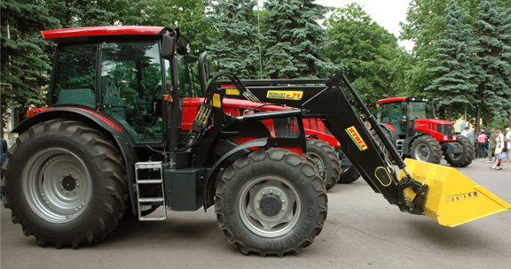

Рыбным текстом называется текст, служащий для временного наполнения макета в публикациях или производстве веб-сайтов, пока финальный текст еще не создан. Рыбный текст также известен как текст-заполнитель или же текст-наполнитель. Иногда текст-«рыба» также используется композиторами при написании музыки.

Они напевают его перед тем, как сочинены соответствующие слова. Уже в 16-том веке рыбные тексты имели широкое распространение у печатников. Рыбные тексты также применяются для демонстрации различных видов шрифта и в разработке макетов.
Как правило их содержание бессмысленно. По причине своей функции текста-заполнителя для макетов нечитабельность рыбных текстов имеет особое значение, так как человеческое восприятие имеет особенность, распознавать определенные образцы и повторения. В случае произвольного набора букв и длины слов ничто не отвлекает от оценки воздействия и читаемости различных шрифтов, а также от распределения текста на странице (макет или площадь набора). Поэтому большинство рыбных текстов состоят из более или менее произвольного набора слов и слогов. Таким образом образцы повторения не отвлекают от общей картины, а шрифты имеют лучшую базу сравнения.